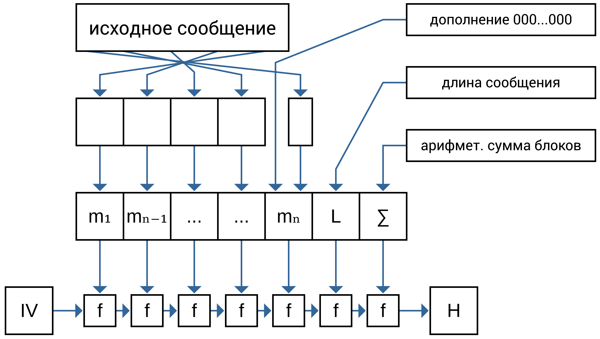
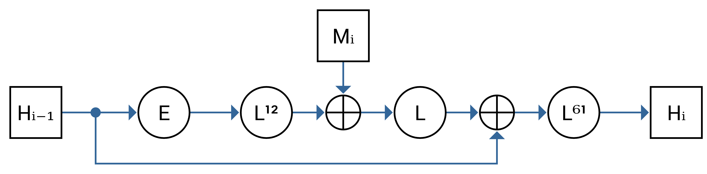
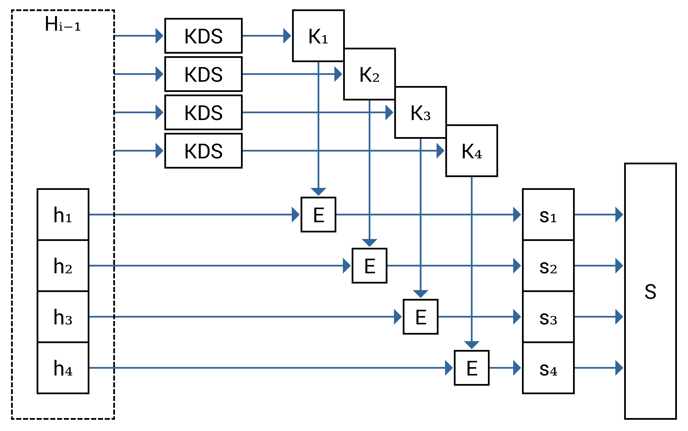
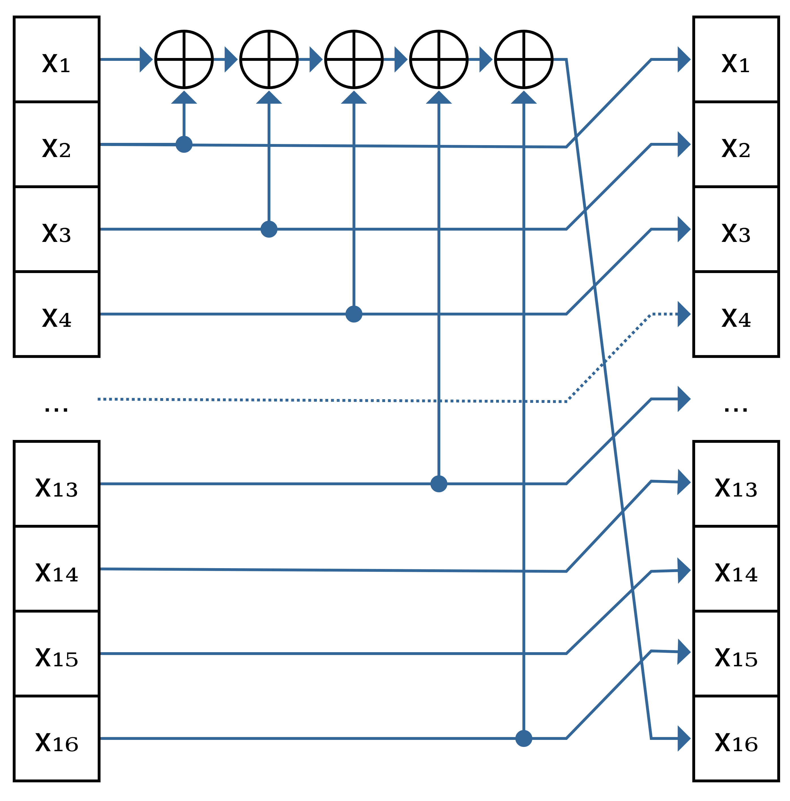

Устаревший российский стандарт ГОСТР34.11-94[119] «Информационная технология. Криптографическая защита информации. Функция хэширования» описывает хеш-функцию, которая в целом также построена с использованием структуры Меркла—Дамгора, но со своими особенностями (рис.8.4).
Рис. 8.4 — Структура хеш-функции ГОСТР34.11-94
Сообщение обрабатывается не с начального блока, а с конечного. Для целей удобства записи считается, что исходное сообщение разбивается на блоки
$$
M = m_n \| m_{n-1} \| \dots \| m_2 \| m_1.
$$
Дополнение происходит в блоке $m_n$, то есть в последнем обрабатываемом, но первом с точки зрения исходного текста. Блок дополняется нулями «слева» (то есть перед открытым текстом) до размера в 256 бит.
В отличие от хеш-функции MD5 присутствует финальное преобразование, которое выполняется над арифметической суммой всех обработанных блоков. В будущем аналогичное преобразование будет использоваться и в хеш-функции ГОСТР34.11-2012 «Стрибог».
Для хеш-функции не определены стартовый вектор $H_0 = IV$, внутренние параметры раундовой функции компресии (параметры $s$-блоков используемой функции шифрования) и способ представления результатов хеширования в виде 16-ричной и/или Base64-записи, что привело к появлению нескольких, несовместимых между собой реализаций алгоритма.
Рис. 8.5 — Последовательность преобразований в раундовой функции сжатия ГОСТР34.11-94
Раундовая функция сжатия состоит из нескольких последовательных преобразований, как показано на рис.8.5.
Рис. 8.6 — Шифрующее преобразование $E$ в раундовой функции сжатия хеш-функции ГОСТР34.11-94
Результат обработки предыдущего блока $H_{i-1}$ разделяется на 4 части. Каждая из них шифруется собственным ключом (также полученным из $H_{i-1}$) с помощью блочного шифра ГОСТ28147—89 в режиме простой замены, как показано на рис.8.6. Результат шифрования конкатенируется (в $S$).
Рис. 8.7 — Линейное преобразование $L$ в раундовой функции сжатия хеш-функции ГОСТР34.11-94
Блок $S$ разбивается на 16 частей (по 16 бит), далее производится линейное преобразование, изображённое на рис.8.7. Все блоки кроме $x_1$ сдвигаются на одну позицию вправо. Значение первого блока $x_1$ складывается побитово по модулю 2 (операция XOR) со значениями блоков $x_2, x_3, x_4, x_13$ и $x_15$, результат помещается в блок $x_16$. Данное преобразование ($L$) повторяется 12 раз.
К результату предыдущих преобразований складывается побитово по модулю 2 (операция XOR) с обрабатываемым блоком $m_i$. Это первый и единственный раз, когда в преобразованиях участвует обрабатываемая последовательность. Результат сложения пропускается через линейное преобразование $L$ 1 раз.
К результату побитово по модулю 2 (операция XOR) добавляется результат обработки предыдущей раундовой функции сжатия $H_{i-1}$. Результат сложения пропускается через линейное преобразование $L$ 61 раз.
В 2008 году криптоаналитики из Европы сумели уменьшить количество операций для поиска коллизий в $2^{23}$ раза (по сравнению с ожидаемым количеством $2^{128}$, [18]). Хотя в целом это не позволяет говорить о криптографической ненадёжности хеш-функции на текущий момент, но показывает, что при её проектировании были допущеные определённые ошибки. С 1 января 2013 года на территории России стандарт был заменён на ГОСТ Р 34.11-2012 «Стрибог».